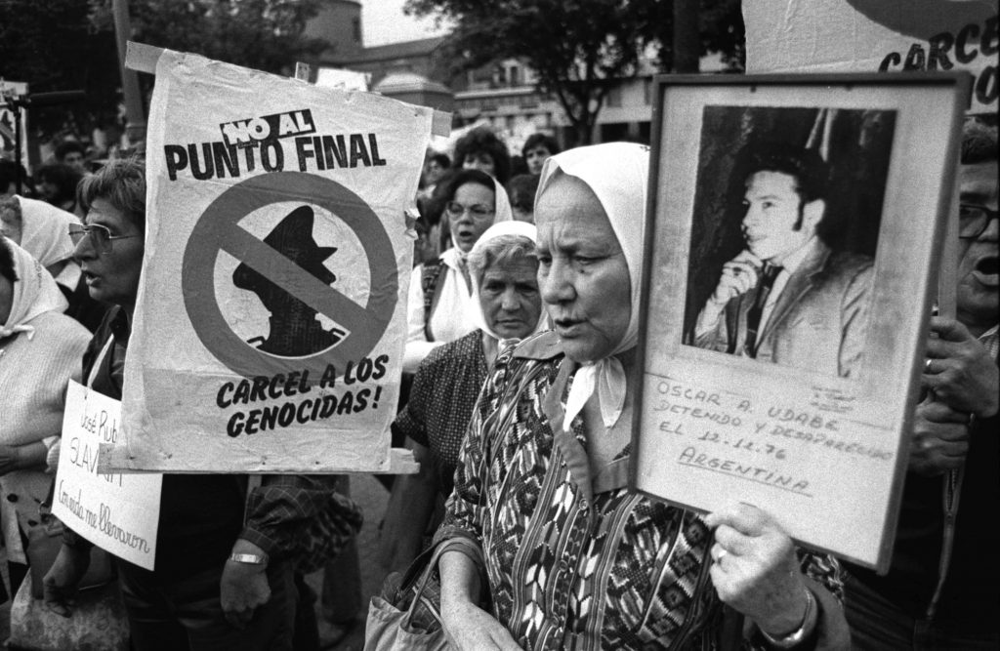

Categories: Dictatorship; coup; Operation Condor; international armed conflict; truth commission; state museum; memorial sites.
Actors: Argentine Armed Forces; a diverse spectrum of groups and parties associated with Peronism; social organizations; guerrilla movements active since the previous decade
Memory initiatives Nunca Más (1984, with reprints): a report published as a result of the work of CONADEP, which established the number of forcibly disappeared prisoners at around 9,000, a figure that would increase over the years. Ley 25.779 (2003): a law that nullifies two other instruments, (the laws 23.492 “de Punto Final”, from 1986; and 23.532, “de Obediencia Debida”, form 1897) which limited legal action against members of the armed forces for crimes against humanity committed during the dictatorship. Ley 25.633 (2002), Ley 26.085 (2006): two laws establishing March 24 as “Día Nacional de la Memoria por la Verdad y la Justicia”, a public holiday in memory of the victims of the dictatorship. Ley 26.691 de Preservación, Señalización y Difusión de Sitios de Memoria del terrorismo de Estado (2011): a law that designates detention, torture and extermination centres as sites of remembrance, to be publicly known and openly discussed.
Sites of Memory Espacio para la Memoria y para la Promoción y Defensa de los Derechos Humanos: a public space located in a former detention centre (the Escuela de Mecánica de la Armada). It houses several public institutions, human rights bodies and organisations, including the Archivo de la Memoria and the Museo::: Sitio ESMA. Archivo Provincial por la Memoria - Córdoba: a memorial located in what was once a clandestine detention centre in this province. It houses archives documenting the activities of state and social organisations during the dictatorship. Parque de la memoria: a public commemorative space, located to the north of Buenos Aires. The park houses the Monumento a las víctimas de terrorismo de Estado, with plaques bearing the names of some 9,000 victims. It also has a documentation centre and a digital archive.
Organisations AServicio Paz y Justicia Argentina (SERPAJ): an organisation that has been active since 1974. During the dictatorship, it provided sustained support for the cases of disappeared prisoners. Asamblea Permanente por los Derechos Humanos: a group formed in 1975, with members from different sectors, who worked together to receive and denounce cases of victims of state terrorism. Madres de la Plaza de Mayo: an organisation created in 1977 as a result of demands made by a group of women to the government regarding the situation of their disappeared children. It is still active today, although it is currently divided into two main branches. Comisión Nacional sobre la Desaparición de Personas (CONADEP): an official body created in 1983, at the beginning of Raúl Alfonsín's government, to receive and investigate reports of disappeared prisoners and children abducted during the dictatorship.